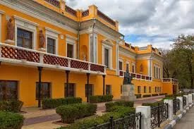
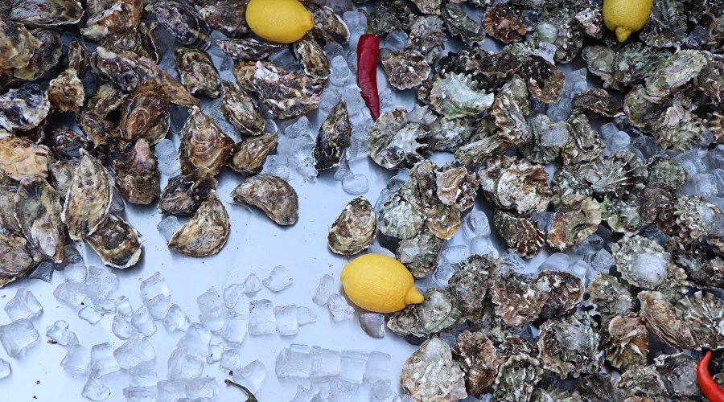

Отдых в Феодосии 2026: что посмотреть, где жить и сколько стоит
Подробный гид по Феодосии на 2026 год: что посмотреть в городе и окрестностях, где остановиться, цены, пляжи, маршрут на 5–7 дней и реальные советы от местных.
Читать статью →Подробные статьи об отдыхе в Феодосии, Судаке, Коктебеле и на Золотом пляже на 2026 год. Без рекламной мишуры — только реальный опыт команды гостевого дома «Палермо» и местных жителей: маршруты, цены, погода, музеи, винодельни и гастрономия.
Подробный гид по Феодосии на 2026 год: что посмотреть в городе и окрестностях, где остановиться, цены, пляжи, маршрут на 5–7 дней и реальные советы от местных.
Читать статью →Что посмотреть в Судаке в 2026 году: Генуэзская крепость, тропа Голицына, Новый Свет и арт-кластер «Таврида». Маршрут на день из Феодосии, цены, советы и расписание.
Читать статью →Полный гид по Золотому пляжу в Береговом под Феодосией на 2026 год: песок, цены на лежаки, кафе, как добраться, когда меньше людей и что взять с собой.
Читать статью →
Гид по культурной Феодосии: картинная галерея И. К. Айвазовского, музей Александра Грина, Музей древностей и дача Стамболи. Цены, расписание, маршрут на день и советы 2026.
Читать статью →Коктебель и заповедник Кара-Даг в 2026 году: дом Волошина, морские прогулки к Золотым Воротам, винодельня, набережная и пляжи. Маршрут на день из Феодосии, цены, советы.
Читать статью →Подробный календарь Крыма на 2026 год: погода, температура воды, цены на жильё и количество туристов по месяцам. Когда лучше ехать с детьми, для пляжа, для экскурсий и для тишины.
Читать статью →
Что попробовать в Крыму в 2026 году: чебуреки и янтыки, барабулька и мидии, крымские вина Коктебеля и Солнечной Долины, татарские десерты, фермерские сыры. Реальные адреса в Феодосии и окрестностях.
Читать статью →Укажите даты — система покажет свободные номера и итоговую цену.